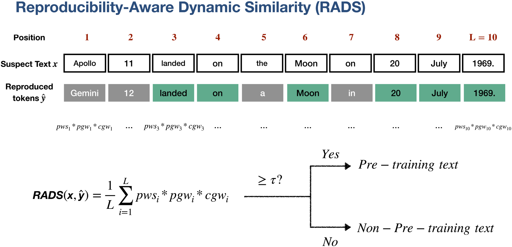
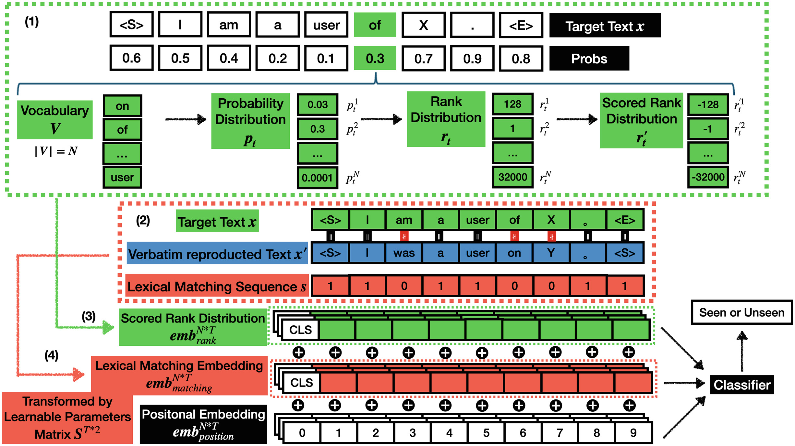
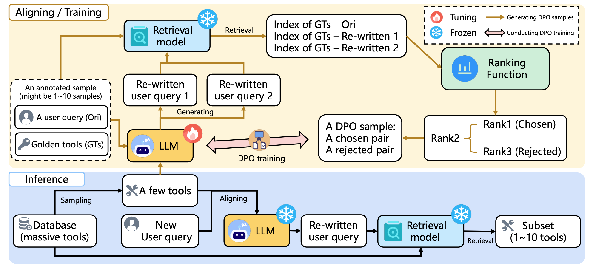

{kind=link}
{kind=link}
{kind=link}
Waseda University, Tokyo, Japan
Apr. 2024 – Present
Doctoral Program, Computer Science and Communications Engineering
Graduate School of Fundamental Science and Engineering
Expected completion: March 2027
I am a PhD student in Yamana Laboratory at Waseda University, Tokyo, Japan. I received my master’s degree in Computer Science and Communications Engineering from Waseda University in 2024.
My research centers on large language models. Over the past several years, I have focused on pre-training data detection and LLM memorization evaluation, while also exploring knowledge editing, machine unlearning, interpretability, and test-time adaptation. My current work focuses on inference acceleration and safe generation.
Earlier, I worked on graph neural networks, recommender systems, incremental learning, and knowledge distillation. My broader interests include foundation model interpretability, spatial understanding and reasoning, and world models.
First-author and co-first-author papers. * Equal contribution.
EMNLP 2026, Main Conference Accepted / To appear

Neural Networks, Vol. 205, 109393, 2027
Available online July 16, 2026

ICONIP 2025, CCIS 2754, pp. 94–108
Published in 2026

ICBDA 2024, pp. 233–242
Apr. 2024 – Present
Doctoral Program, Computer Science and Communications Engineering
Graduate School of Fundamental Science and Engineering
Expected completion: March 2027
Apr. 2022 – Mar. 2024
Master’s Program, Computer Science and Communications Engineering
Graduate School of Fundamental Science and Engineering
Sept. 2016 – July 2020
Undergraduate Program, School of Software
Apr. 2023 – Present
Research Intern
Research and development on large language models. At NTCIR-18 U4, I contributed to a framework for table retrieval and table question answering over Japanese financial reports. The AIREV team placed second in both tasks.
Apr. 2024 – Mar. 2025
Research Assistant
Research on copyright infringement issues in large language models.
2024 – 2027
Doctoral research support through Waseda University’s W-SPRING program.
2026 – 2027
Research support from the Waseda Research Institute for Science and Engineering and KIOXIA Corporation.
2026 – 2027
Supporting Pioneering Research through AI for 1,000 Discovery challenges.